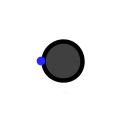
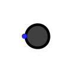

LED
| 库: | 输入/输出 |
| 介绍: | 2.1.3 |
| 外观符号: |
 

|
行为
根据输入是 1 还是 0，通过对 LED 进行着色（由其 Color 属性指定）来显示其输入的值。
（除了外观略有不同外，LED 组件基本上与输出引脚是多余的。不过，一些用户认为包含该组件会更好。）
引脚
LED 只有一个引脚，即 1 位输入，用于确定 LED 是否显示为彩色（当输入为 1 时）或变暗（当输入为其他值时）。
属性
当选择或添加组件时，箭头键会更改其
Facing
属性。
- 方向
- 输入引脚相对于组件的位置。
- 颜色
- 输入值为 1 时显示的颜色。
- 活跃度高？
-
如果
是
，则当输入为1时LED呈彩色。如果否
，则当输入为0时LED呈彩色。 - 标签
- 与组件关联的标签内的文本。
- 标签位置
- 标签相对于组件的位置。
- 标签字体
- 用于呈现标签的字体。
- 标签颜色
- 绘制标签的颜色。
Poke 工具行为
无
文本工具行为
允许编辑与组件关联的标签。
返回 电路元件库参考手册